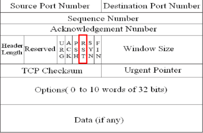

Firewall
A firewall
can work on different layers of the OSI model, thus providing different features and protections.
Firewalls are specialized software modules running
on a computer or a
dedicated network device. They serve to filter packets coming in and out of a network
Packet filtering
An administrator can create rules which will filter packets according to certain characteristics like:
◇ Source IP address
◇ Destination IP address
◇ Protocol
◇ Source port
◇ Destination Port
After inspect the header of a packet in transit common actions that a firewall can take are:
◇
Allow: allow the packet to pass
◇
Drop: drops the packet without any diagnostic message to the packet source host
◇
Deny: do not let the packet pass, but notify the source host
A basic firewall inspect only the header but if a hacker insert an exploit in the application data(
payload), the packet will pass!
Application level firewalls: Firewalls that work in all OSI 7 layer
They provide a more comprehensive protection because they inspect also the
payload and not just its headers.
In some cases we can realize the presence of a firewall on a port of a host during a
three-way-handshake If a port is been firewalled a host can send back a ACK for the SYN of the host, but send a flag RST to
re
se
t the connection instead of its SYN
